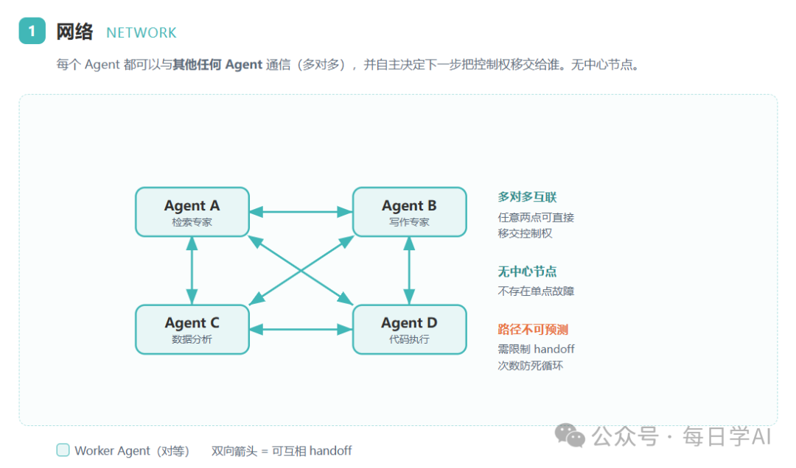
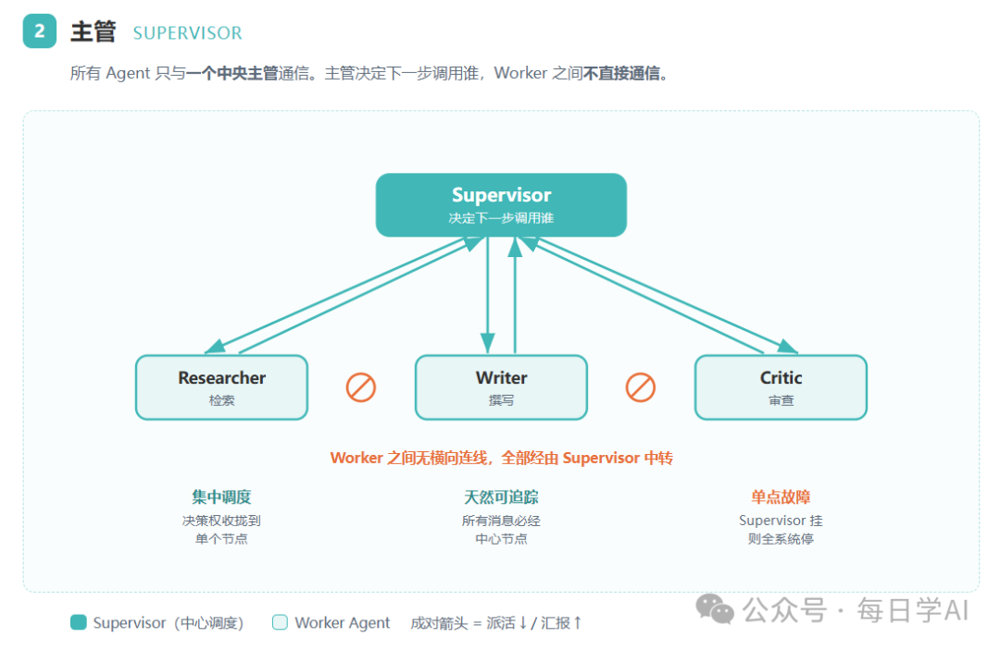
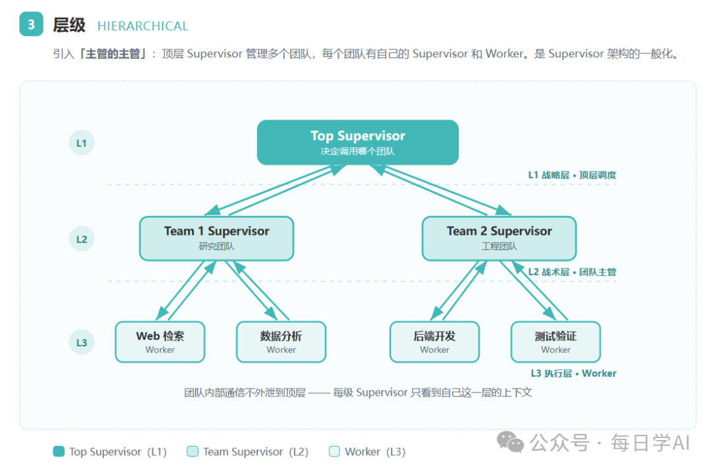

多 Agent 三种拓扑怎么选：Network、Supervisor、Hierarchical 讲透
来源：微信公众号 归档日期：2026-09-16 抓取状态：成功 原文字符：6314｜配图：3 张
摘要速览
- 什么时候才该拆多 Agent：工具太多导致单 Agent 决策质量下降、上下文过于复杂、任务需要多个专业领域；收益是模块化、专业化、可控性。
- 三种拓扑按控制集中度排列：Network（任意互转，最灵活最难控）、Supervisor（都经由主管调度）、Hierarchical（主管之上再套主管）。
- Network 靠 handoff（目的地 + 载荷）通信，适合无层级、无固定顺序的问题（客服分流、多轮对话）。
- Network 的代价是可预测性低：必须设 handoff 次数上限（建议不超过 10 次）并配转人工兜底。
- 常见误解澄清：Network 与 Swarm 不是同一回事。
核心内容
1. 为什么要把单 Agent 拆成多 Agent
三个拆分动因：
- 工具太多：单个 Agent 挂上十几二十个工具后，选错工具的概率显著上升，决策质量下降。
- 上下文过于复杂：不同子任务需要的知识、规则、历史混在一个上下文里，互相干扰。
- 需要多个专业领域：一个通用 Agent 很难同时是财务专家、法律专家和运维专家。
拆分带来的三个收益：模块化（每个 Agent 可独立开发测试）、专业化（提示词与工具围绕单一职责收敛）、可控性（每段行为可单独观测与约束）。
2. Network（网络拓扑）
- 结构：Agent 之间多对多连接，任意一个 Agent 都可以把控制权移交给任意另一个 Agent。
- 通信机制：靠 handoff——一小段结构化消息，包含目的地（交接给谁）和载荷（交接什么状态/上下文）。
- 适用：没有明显层级、也没有固定先后顺序的问题，例如客服分流、多轮对话中的话题切换。
- 代价：可预测性低。路径不固定意味着可能出现来回踢皮球、无限循环、成本失控。
- 必须配套的护栏：设置 handoff 次数上限（文章中建议不超过 10 次），超限直接转人工兜底。
3. Supervisor（主管拓扑）
- 结构：每个 Agent 只与主管通信，不直接互相移交；由主管决定下一步调用谁。
- 适用：流程相对可控的分工，主管实际上承担了路由与状态机的角色。
- 对比 Network：控制权集中，调试与审计更容易，但主管会成为瓶颈与单点。
4. Hierarchical（层级拓扑）
- 结构：主管之上再套主管，形成多层级调度树。
- 适用：大规模、多团队的复杂系统，需要把不同域拆给不同子主管管理。
5. 常见误解
文章澄清了"Network 与 Swarm 是不是同一回事"这一常见混淆。
可执行启发
- 先判断是否真的需要多 Agent：只有工具过载、上下文互扰、需要多专业领域三者之一成立时才拆，否则单 Agent + 更好的提示词更划算。
- 选型默认从 Supervisor 起步——它是最容易观测和调试的拓扑；只有在问题本身没有固定顺序时才考虑 Network。
- 上 Network 前先把护栏配好：handoff 次数上限 + 超限转人工，否则线上一定出现循环与成本失控。
- 把 handoff 载荷定义成显式的结构化状态，而不是"把聊天记录一起传过去"，否则上下文会越滚越大。
我的想法
（待补充）
关联
- 基于 LangGraph 官方文档整理。
归属：[[02-输入/按主题/AI与效率/_index|AI与效率]]
原文沉淀
📮 摘要 拆成多 Agent 只是开始，怎么连才是真正决定系统上限的地方。本文基于 LangGraph 官方文档，讲清 Network / Supervisor / Hierarchical 三种拓扑的准确定义、通信方式与适合场景，并厘清一个常见误解 —— Network 和 Swarm 到底是不是一回事。
从「一个 Agent 挂 20 个工具」说起
你给一个 Agent 挂了 20 个工具，然后发现它开始乱调了。
不是模型变笨了。是选择太多 —— 每多一个工具，它在「接下来该调哪个」这个决定上出错的概率就大一分。上下文也会越来越臃肿，单个 Agent 根本跟不住。
LangGraph 官方文档把促使人们拆分的动因归纳为三类：
•工具太多导致决策质量下降
•上下文过于复杂难以跟踪
•系统里需要多个专业领域（比如规划、检索、数学各有专长）
拆开之后能得到三个好处：
•模块化（独立开发测试维护）
•专业化（每个 Agent 专注一个领域）
•可控性（你能明确控制 Agent 之间怎么通信，而不是全靠函数调用去猜）
但拆完紧接着是第二个问题，也是真正决定系统上限的问题：
这几个 Agent 之间，到底该怎么连？
拓扑一：Network（网络）
它长什么样
官方文档的定义很简洁：每个智能体都可以与其他任何智能体通信（多对多连接），并且任何智能体都可以决定下一步调用哪个其他智能体。
打个比方，Network 像一个圆桌讨论。没有主持人，谁都可以接话，也谁都可以把话题抛给在座任意一个人。

Network：每个节点之间都有双向箭头，任意两个 Agent 可互相移交控制权
关键机制：Handoff
Network 里 Agent 之间的通信靠的是移交（handoff） —— 一个 Agent 把控制权交给另一个 Agent。
你可以把 handoff 理解成接力赛交接棒。交接时要说清楚两件事：
•目的地：交给谁（下一个节点的名字）
•载荷：带什么信息过去（状态更新，通常是消息列表）
在 LangGraph 里，Agent 节点返回一个 Command 对象，同时指定去哪和带什么：
PYTHON
def agent_1(state) -> Command[Literal["agent_2", "agent_3", END]]: response = model.invoke(...) return Command( goto=response["next_agent"], # 目的地 update={"messages": [response["content"]]} # 载荷 )
适合什么场景
官方文档给的判断标准是：适用于没有明确的 Agent 层级、也没有特定调用顺序的问题。
说得再具体些，如果任务的下一步该做什么，取决于当前聊到哪了、谁接手最合适，而不是一条预设的流水线 —— 那 Network 就合适。
典型场景：客服分流、多轮对话、需要动态判断该由谁处理的任务。
代价
可预测性低。因为谁都能交给谁，流转路径难以提前画出。调试时你会发现，追踪一次完整调用链变得很费劲。
还有个必须处理的工程问题：要防止 Agent 之间无限踢皮球。常见做法是设置 handoff 次数上限（社区建议不超过 10 次），并配一个「转人工」的兜底出口。
拓扑二：Supervisor（主管）
它长什么样
定义是：每个智能体都与一个主管智能体通信，由主管决定下一步应该调用哪个智能体。
还是打比方：Supervisor 像一个项目经理带几个专员。专员之间不直接沟通，都向经理汇报，经理决定下一件事派给谁。

Supervisor：Worker 之间没有横向连线，全部经中心节点中转
注意 Worker 之间没有横向连线 —— 这是和 Network 最本质的区别。
它解决什么问题
Network 的自由带来了混乱，Supervisor 把决策权收拢到一个节点上。收益很直接：
•可预测性高：所有流转都经过中心，路径清晰
•可观测性好：所有消息经过中心节点，天然可追踪
•适合并行：官方文档明确提到，这种架构「也非常适合并行运行多个智能体或使用 map-reduce 模式」
代价
Supervisor 是单点。它挂了，整个系统就停了。而且每一步都要经过它中转，比 Network 多一跳开销。
更隐蔽的问题是规模上限。当 Agent 数量增加，Supervisor 会开始在「下一步调谁」上做出糟糕决策，或者上下文膨胀到它自己都跟不住 —— 你为了解决复杂度而拆分成多 Agent，最后复杂度又回到了一个节点上。
社区经验给出的适用规模是 3-8 个 Agent 左右（这个数字来自第三方技术文章的经验总结，非官方硬性规定，具体要看你的任务复杂度）。
有个变体值得知道：Supervisor（工具调用）
官方文档还列了一个特例：把子 Agent 包装成工具，Supervisor 用支持工具调用的 LLM 来决定调哪个「工具」、传什么参数。
好处是可以直接用预置的 ReAct Agent 搭出来，实现成本低。代价是灵活性不如完整版 —— Agent 变成了被调用的函数，而不是可以对等通信的节点。
拓扑三：Hierarchical（层级）
为什么需要它
官方文档的动机描述得很实在：当你往系统里加更多 Agent，「主管可能会难以管理所有智能体」，开始做出糟糕的路由决策，或者上下文复杂到单个主管跟不住。
绕了一圈，你又撞上了最初促使你拆成多 Agent 的那个问题 —— 只是这次，问题长在了 Supervisor 自己身上。
它长什么样
解法是层级化：创建由各个主管管理的专门团队，再由一个顶级主管管理这些团队。官方称之为「主管架构的一般化」。

Hierarchical：引入「主管的主管」，每级 Supervisor 只看到自己这一层的上下文
每个团队是一个独立的子图（subgraph），团队内部的通信不外泄到顶层。这是它能扩展的关键 —— 层级之间做了上下文隔离。
适合什么场景
•Agent 数量多（社区经验值在 10-50+ 量级）
•有清晰的业务分组，可以按领域切团队
•需要按层级做权限控制
代价
架构复杂度和延迟都会上升。每多一层，就多一次 LLM 路由决策的开销。而且层级过深会拖慢整体响应，不适合实时场景。
还有个容易忽略的成本：管理层自身也在消耗 token，虽然中间层通常可以用更便宜的小模型。
先厘清一个常见误解：Network 和 Swarm 是一回事吗
你在中文资料里大概见过「Supervisor / Swarm / Hierarchical」这个三分法，而我们这里讲的是 LangGraph 官方的「Network / Supervisor / Hierarchical」。
它们指的是同一件事，只是命名来源不同。
•Network 是 LangGraph 官方文档的术语
•Swarm 来自 OpenAI 开源的 Swarm 框架（后来演进为 OpenAI Agents SDK）
两者的本质完全相同：去中心化 + handoff 移交控制权。社区里这两个词经常混用，看到时知道指的是同一个拓扑就行。
所以本文统一用 LangGraph 的官方术语 Network。你在别处看到 Swarm，直接对应过来即可。
一张表横向对比
| 维度 | Network | Supervisor | Hierarchical |
|---|---|---|---|
| 控制方式 | 去中心，Agent 自主 handoff | 中心节点统一调度 | 多层主管逐级调度 |
| 通信路径 | 任意两点互联 | 都经过中心 | 按层级上下传递 |
| 可预测性 | 低 | 高 | 高 |
| 动态适应性 | 高 | 低 | 中 |
| 容错性 | 高（无单点） | 低（单点故障） | 中（需冗余设计） |
| 每步跳数 | 1 跳 | 2 跳 | 3 跳以上 |
| 适用规模 | 2-15 | 3-8 | 10-50+ |
| 实现难度 | 中 | 中 | 高 |
说明：规模区间是社区第三方文章的经验总结，不是官方硬性阈值。跳数由拓扑结构决定，是确定性的；实际延迟还要看你用的模型和任务复杂度。
怎么选：三个判断依据
不用背表，按这三个问题顺序问下来就行。
第一问：任务有固定的先后顺序吗？
•有 → 别用 Network。固定的流水线用显式控制流（普通图边）最省事，甚至不需要 LLM 来做路由决策。
•没有，下一步取决于当前状态 → 继续第二问。
第二问：你需要严格控制每一次流转吗？
•需要（比如金融、医疗这类要可审计的场景）→ Supervisor。所有决策经过中心，天然可追踪。
•不需要，更在意灵活和容错 → Network。
第三问：Agent 会超过 10 个吗？
•会，而且能按领域分成几组 → Hierarchical。
•不会 → 停在 Supervisor 就好。别为了「看起来先进」提前上层级，多一层的复杂度是实打实的。
一个反直觉的建议
从 Supervisor 开始。
它最容易实现、最容易调试，也最容易在出问题时定位。等真的遇到「Supervisor 管不过来了」的信号 —— 比如它开始频繁选错 Agent、或者上下文长到要截断 —— 再演进到 Hierarchical。
这个信号本身就是官方文档给出的升级判据。
看一条真实的演进路径
假设你在做一个研报自动生成系统。
第一阶段，3 个 Agent：检索、写作、审查，一个 Supervisor 调度。跑得很顺，出问题一眼能定位。
第二阶段，8 个 Agent：你陆续加了数据清洗、图表生成、事实核查、合规审查…… Supervisor 的提示词越来越长。然后你发现它开始把「该去查数据」的活派给写作 Agent —— 不是模型犯傻，是它的上下文里已经塞了 8 个 Agent 的职责描述，决策质量在下滑。
第三阶段，12 个 Agent：你把 Agent 分成「研究组」和「写作组」，每组给一个 Team Supervisor，顶上再放一个总控。研究组内部的检索 → 清洗 → 核查循环不再上报到顶层，顶层的上下文一下清爽了。
注意这里的关键信号不是「Agent 数量到了 10」，而是 Supervisor 开始频繁选错。数量只是表象，决策质量下降才是升级的真实触发点。要是你一开始就按「以后会扩展到 20 个」来设计层级，前面两个月全在为没到来的复杂度买单。
说清楚几点局限
第一，三种拓扑可以混合，而且大型系统通常都混合。
比如顶层用 Hierarchical 管理多个团队，团队内部用 Supervisor 协调，而面向用户的客服入口用 Network 做动态分流。LangGraph 的 subgraph 机制天然支持这种嵌套组合。
别把它们当成三选一的单选题。
第二，上表的规模区间是经验值，不是阈值。
3-8、10-50+ 这些数字来自第三方技术文章的总结，没有官方基准测试支撑。你的具体上限取决于任务复杂度、模型能力和上下文管理方式。把它当参考起点，别当硬约束。
第三，无论选哪种，有些基础设施都得有。
超时控制、可观测性（Trace）、优雅降级 —— 这三样和拓扑选择无关，是生产环境的必备项。特别是 Network，因为流转路径不可预测，没有 Trace 基本没法排查问题。
第四，状态管理才是真正的难点。
官方文档专门用了一大节讲这个：Agent 之间共享完整的思考过程，还是只共享最终结果？前者有助于下游决策，但消息列表会迅速膨胀；后者需要给子 Agent 定义独立的状态模式。
这个问题在三种拓扑里都存在，而且往往比选拓扑更影响最终效果。
回到最初那个问题
一个 Agent 挂 20 个工具会乱调，于是你拆成了多个 Agent。
但拆完之后你会发现，真正的复杂度并不在单个 Agent 内部，而在 Agent 之间的连线上。
Network 把决策交给每个 Agent 自己，换来灵活，代价是不可预测；Supervisor 把决策收拢到一个节点，换来可控，代价是单点；Hierarchical 把决策分层，换来规模，代价是延迟和复杂度。
没有哪个更好，只有哪个更适合你当前的问题形状。
而判断的依据其实很朴素：数一数你有几个 Agent，问一问任务是不是固定顺序，再确认一下你要的是可控还是灵活。
三个问题答完，答案基本就出来了。
END
— 谢 · 谢 · 观 · 看 —
如果本文对你有帮助，点个赞 + 在看，是对我最大的鼓励 ❤️
关注我，每日学AI，每天进步一点点
这里有 AI 前沿 · 开源一线 · 实战教程
归属：[[02-输入/按主题/AI与效率/_index|AI与效率]]